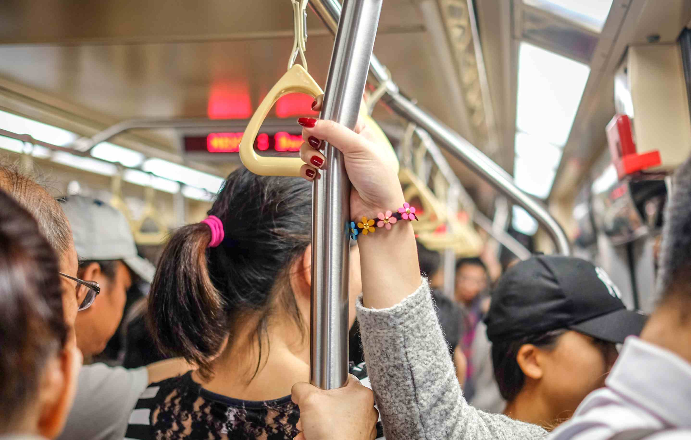
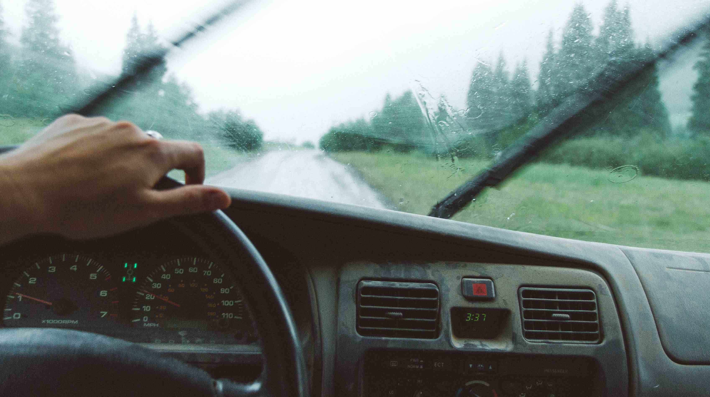

Public transportation is convenient in big cities like Taipei and Kaoshuing. For
most
of the famous travel spots, you can go by buses and MRT. It's relative cheap comparing to
Hong Kong or Japan. Also you can choose the one-day pass or two-day pass. Save your money to
rent a car and save your time to find a parking lot in big cities. But please don't forget.
Eating and drinking are forbidden in the MRT! Here is the link to the Taipei Mrt guide. You
can find route map, schedule, fee there. Taipei MRT information
Rent a car

If you want to explore more in the countryside instead of the big cities, it is a
good way to explore Taiwan by renting a car. Taiwan's roads are notorious for having
well-placed speed trap cameras along the sides. These cameras are very visible, however,
with ample warning times and clearly marked signs (in Chinese only), and finding them can be
a fun game for passengers in the car. To drive legally in Taiwan, please be sure to first
apply for an International Driver's Permit (IDP) in your home country.
Taxi
Taxis are ubiquitous in all of Taiwan's cities. Surcharges may apply for things such
as luggage and reserving a cab (as opposed to hailing one).
Outside urban areas, taxi drivers will either use meters or ask for a flat rate (the smaller
the town the more likely the latter). In these areas, taxis are not that abundant, so it's a
good idea to get your hotel to call first, and then to keep the driver's number for
subsequent rides. Recently You even can call a taxi with the help of the clerk using the
iBon or FamiPort machines in the convenient stores. During the past, some taxi drivers will
take advantage of the tourist by driving through a far path to charge more, but it rarely
happends now. If you are still worried about it, You can use the fare estimator. Fare Estimator
Bike
Today, Taiwan has over 5000 kilometers of dedicated bike paths with easy access to
rest stops and service facilities and a strong base of local cycling enthusiasts. Roads are
well paved and easy to navigate, with bilingual road signs, a visitor-friendly bonus for
non-native speakers.Taiwan offers unlimited natural beauty and a large variety of
landscapes, ranging from lush forests to rice paddies and steep mountains to rugged
coastlines. With changing views and topography at every turn cycling trips never get boring
here, and the two-wheeled adventurer is well rewarded with views of the seacoast, mountains
and interior valleys that rival anything you’d experience from the seat of a bus or train.
You can find more information here: Cycling
in Taiwan